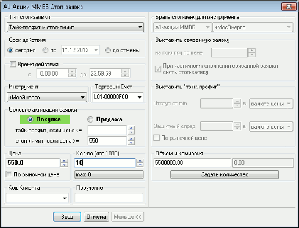

Заполнение полей в окне "Стоп-заявка"
С помощью формы ввода стоп-заявки можно формировать условные заявки разных
типов. Дополнительные условия заявки отображаются в расширенной форме,
вызываемой нажатием кнопки "Больше >>" или выбором типа условной заявки,
для которой предназначены эти дополнительные условия.

Заполнение формы заявки:
- «Тип стоп-заявки» – выбор одного из возможных типов поручения. Делает
доступным особые поля, относящиеся к определенному типу стоп-заявки. При
необходимости окно ввода заявки принимает расширенную форму.
- «Срок действия»:
- «сегодня» – поручение действительно до конца текущего дня;
- «по …» – поручение действительно до указанной даты;
- «до отмены» – поручение действительно, пока не
отменено.
- Стоп-заявки «Со связанной заявкой» действительны только в течение
текущей торговой сессии.
- «Время действия заявки» - период времени, в течение которого проверяются
условия стоп-заявки. Параметр поручений типа «Тэйк-профит и стоп-лимит». Если
флажок отключен, то параметр не используется. При включенном флажке необходимо
указать в поле «с…» - время начала действия стоп-заявки, а в поле «до…» -
время окончания.
- Параметр «Время действия заявки» определяет только интервал времени, в
течение которого проверяется условие активации стоп-заявки. Если заявка
активировалась, то проверка времени действия прекращается. Например, если
для заявки типа «Тэйк-профит и стоп-лимит» цена пробила уровень тэйк-профит
(заявка сработала, начался расчет минимума/максимума цены), но заявка не
исполнилась до окончания заданного интервала времени внутри дня, то расчет
максимума/минимума цены не прекращается по истечении заданного периода
времени.
- Если значения времени «С…» и «До…» совпадают, или значение «С…» больше значения «До…», то считается, что задан интервал с указанного времени текущего дня, до аналогичного времени следующего дня. Если значение «До…» строго больше времени «С…», то время действия проверяется в течение текущего дня.
- При включенной настройке «Показывать дату и время торговых данных с учетом локальной временной зоны» значение параметра «Время действия заявки» указывается с учетом временной зоны компьютера, на котором запущен терминал QUIK.
- «Инструмент» – выбор инструмента из списка
инструментов данного класса. Чтобы найти инструмент в списке, наберите с клавиатуры
первые буквы его наименования (контекстный поиск в выпадающих списках
включается в меню Система/Настройки/Основные настройки..., раздел «Программа»).
- «Торговый счет» – код торгового счета, в отношении которого делается поручение. Регистр символов в поле имеет
значение. Если за пользователем закреплен один счет, то поле заполняется
автоматически. Если доступны несколько счетов, то требуется выбрать
нужный счет из списка или воспользоваться настройкой «Указывать счет депо по
коду клиента» (см. Настройки ввода заявки). Отображение в списке возможных значений торговых счетов
со статусом «Операции запрещены» можно включить в основных настройках (см. Параметры торговли). О
настройке последовательности счетов в списке см. Настройка счетов.
- «Условие активации заявки» - настройка условий активации заявки:
- «Покупка» / «Продажа»«Операция» – выбор направления заявки.
- Выбор контролируемого условия стоп-цены по отношению к цене последней
сделки по инструменту:
- Для заявок типа «Стоп-цена по другому инструменту» условие имеет вид:
«Если цена <=» ( или «>=») и означает исполнение заявки, если цена
последней сделки по другому инструменту пересечет указанное значение;
- Для заявок типов «Стоп-лимит», «Со связанной заявкой» условие имеет
вид «стоп-лимит, если цена <=» ( или «>=») и означает выставление
лимитированной заявки в случае, если цена последней сделки пересекла
указанное значение;
- Для заявок типа «Тэйк-профит» условие имеет вид «тэйк-профит, если
цена <=» ( или «>=») и означает начало расчета минимума
(максимума) цены последней сделки, если она пересекла указанное
значение;
- Для заявок типа «Тэйк-профит и стоп-лимит» доступны условия 2) и 3),
причем любое из них может не заполняться.
Значение
стоп-цены указывается в окне справа от выбора условия.
«Цена» – цена лимитированной заявки,
выставляемой в торговую систему при наступлении условия «Стоп-лимит», за одну
единицу финансового инструмента.
При включении признака «По рыночной цене» значение поля устанавливается в «0». При отключении признака «По рыночной цене» в поле автоматически подставляется значение цены, указанное в данном поле до включения признака «По рыночной цене». При смене инструмента запомненное значение сбрасывается.
«По рыночной цене» - признак исполнения стоп-заявки по рыночной цене.
Параметр заявок типа «Тэйк-профит и стоп-лимит».
- В некоторых режимах торгов использование рыночных заявок не
предусмотрено.
«Кол-во (лот = …)» – количество инструментов,
выраженное в лотах. В скобках указано количество единиц выбранного инструмента
бумаг в одном лоте.
«max» – максимальное возможное количество лотов в стоп-заявке,
рассчитанное из величины доступных средств клиента с учетом всех комиссий.
Нажатием на кнопку указанное максимальное значение вводится в поле
«Кол-во». Поле отображается при включенном в настройках
флажке «Рассчитывать доступное количество».
«Код Клиента» – идентификатор клиента в системе QUIK.
«Поручение» – текстовый комментарий к заявке.
«Брать стоп-цену для инструмента» - наименование и класс инструмента, по
которому осуществляется контроль условия стоп-цены. Параметр поручения типа
«Стоп-цена по другому инструменту».
«Выставить связанную заявку на покупку (продажу) по цене ..» - цена
исполнения связанной лимитированной заявки. Параметр поручения типа «Со
связанной заявкой».
«При частичном исполнении связанной заявки снять стоп-заявку» – если
флажок установлен, то при частичном исполнении связанной лимитированной заявки
стоп-заявка становится снятой. Если флажок снят, то при частичном исполнении
связанной заявки объем стоп-заявки уменьшается до величины неисполненного
остатка лимитированной заявки.
«Выставить «take profit» - параметры заявки типа «Тэйк-профит»:
- «Отступ от max (min)» – устанавливает значение отступа от максимума (на
продажу) или минимума (на покупку) цены последней сделки, при достижении
которого будет сгенерирована лимитированная заявка. Значение отступа может
указываться как в виде отклонения цены, так и в процентах.
- «Защитный спред» – устанавливает дополнительное (опережающее) отклонение
цены заявки от цены последней сделки, инициировавшей заявку. Защитный спред
предназначен для того, чтобы установить цену создаваемой
лимитированной заявки заведомо исполнимой.
- «По рыночной цене» - признак исполнения тэйк-профита по рыночной цене.
Значение параметра «Защитный спред» в данном случае не используется.
Параметр заявок типа «Тэйк-профит и стоп-лимит».
- В некоторых режимах торгов использование рыночных заявок не
предусмотрено.
«Объем и комиссия» - оценка заявки в денежном выражении. Позволяет рассчитать
«Количество» инструментов в заявке по известной сумме денег. Для этого нужно ввести в
поле «Объем» сумму денежных средств и нажать кнопку «Задать количество». При
этом в поле «Количество» будет введено число, полученное в результате
пересчета и округленное вниз до ближай-шего целого, а в поле «Объем» –
денежная оценка заявки при данном «Количестве».
Сумма брокерской комиссии с объема заявки рассчитывается
автоматически в соответствии с установленным алгоритмом и выводится в поле справа.
-
- При заполнении формы заявки можно перемещаться между полями мышью,
либо клавишей «Tab» в одну сторону, или «Ctrl»+«Tab» в обратную сторону.
- Поля «Количество», «Код клиента», «Поручение» могут быть заполнены
автоматически. Подробнее см. Настройка
автозаполнения полей ввода заявки.
- В случае неблагоприятного исполнения заявки типа «Тэйк-профит» на
покупку, цена будет рассчитана следующим образом:
<стоп-цена>+<отступ от min/max>+<защитный
спрэд>.
Пример использования заявки типа «Тэйк-профит»:
- Предположим, что куплены акции по 10 р., и планируется продать по цене не ниже 11
р. Нужно поставить тэйк-профит на продажу, в котором в условии активации
стоп-заявки указывается цена 11 р. Также указывается два дополнительных
параметра:
- «отступ от max» - этот параметр указывает, насколько ниже локального
максимума цены может стать цена последней сделки;
- «защитный спред» — насколько меньше цены срабатывания тэйк-профита будет
цена порожденной им лимитированной заявки на продажу.
- Предположим, что мы задаем «отступ от max» = 5 коп., «защитный спред» = 2
коп. Допустим, что наши ожидания оправдались, и рынок пошел в выгодную для нас
сторону, т.е. растет. Цена достигла 11 р. — на этой точке тэйк-профит
активируется и начинает проверять, будет расти цена дальше, или нет. При этом
он проверяет, не стала ли цена последней сделки по инструменту ниже чем разница
«локальный максимум цены»-«отступ от max».
- Предположим, цена растет и достигает 11,30, после чего падает до 11,26 и
опять начинает расти. Тэйк-профит в этом случае не превратится в лимитированную
заявку, так как цена упала от максимума на 4 коп., а мы задали «отступ от max» =
5 коп., т.е. условие исполнения достигнуто не было.
Дальше цена выросла до 11,40 и упала до 11,33 — вот тут наш тэйк-профит
активируется и породит лимитированную заявку на продажу с ценой, вычисляемой
по следующей формуле:
«цена последней сделки» - «защитный спред»
Т.е. цена заявки на продажу будет 11,33–0,02=11,31. «Защитный спред» нужно
указать для защиты от «проскальзывания» рынка ниже цены порожденной
тэйк-профитом заявки.
Для ситуации с покупкой все выполняется с точностью «до
наоборот».
Если для какого-то типа условной заявки не предусмотрен один из пунктов
заявки, то он становится «серым» (неактивным).
Порядок подтверждения условной
заявки, настройки параметров ее ввода, доступные функции и способ быстрого ввода
такие же, как и при вводе заявки.